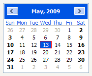

| Version: 2.9.4 |
#include </home/zeitlin/src/wx/github/interface/wx/calctrl.h>
 Inheritance diagram for wxCalendarCtrl:
Inheritance diagram for wxCalendarCtrl:The calendar control allows the user to pick a date.
The user can move the current selection using the keyboard and select the date (generating EVT_CALENDAR event) by pressing <Return> or double clicking it.
Generic calendar has advanced possibilities for the customization of its display, described below. If you want to use these possibilities on every platform, use wxGenericCalendarCtrl instead of wxCalendarCtrl.
All global settings (such as colours and fonts used) can, of course, be changed. But also, the display style for each day in the month can be set independently using wxCalendarDateAttr class.
An item without custom attributes is drawn with the default colours and font and without border, but setting custom attributes with SetAttr() allows to modify its appearance. Just create a custom attribute object and set it for the day you want to be displayed specially (note that the control will take ownership of the pointer, i.e. it will delete it itself). A day may be marked as being a holiday, even if it is not recognized as one by wxDateTime using the wxCalendarDateAttr::SetHoliday() method.
As the attributes are specified for each day, they may change when the month is changed, so you will often want to update them in EVT_CALENDAR_PAGE_CHANGED event handler.
This class supports the following styles:
The following event handler macros redirect the events to member function handlers 'func' with prototypes like:
Event macros for events emitted by this class:
|  |  | |
| wxMSW appearance | wxGTK appearance | wxMac appearance |
Public Member Functions | |
| wxCalendarCtrl () | |
| Default constructor. | |
| wxCalendarCtrl (wxWindow *parent, wxWindowID id, const wxDateTime &date=wxDefaultDateTime, const wxPoint &pos=wxDefaultPosition, const wxSize &size=wxDefaultSize, long style=wxCAL_SHOW_HOLIDAYS, const wxString &name=wxCalendarNameStr) | |
| Does the same as Create() method. | |
| ~wxCalendarCtrl () | |
| Destroys the control. | |
| bool | Create (wxWindow *parent, wxWindowID id, const wxDateTime &date=wxDefaultDateTime, const wxPoint &pos=wxDefaultPosition, const wxSize &size=wxDefaultSize, long style=wxCAL_SHOW_HOLIDAYS, const wxString &name=wxCalendarNameStr) |
| Creates the control. | |
| virtual void | EnableHolidayDisplay (bool display=true) |
This function should be used instead of changing wxCAL_SHOW_HOLIDAYS style bit directly. | |
| virtual bool | EnableMonthChange (bool enable=true) |
This function should be used instead of changing wxCAL_NO_MONTH_CHANGE style bit. | |
| virtual void | EnableYearChange (bool enable=true) |
| virtual wxCalendarDateAttr * | GetAttr (size_t day) const |
| Returns the attribute for the given date (should be in the range 1...31). | |
| virtual wxDateTime | GetDate () const |
| Gets the currently selected date. | |
| virtual const wxColour & | GetHeaderColourBg () const |
| Gets the background colour of the header part of the calendar window. | |
| virtual const wxColour & | GetHeaderColourFg () const |
| Gets the foreground colour of the header part of the calendar window. | |
| virtual const wxColour & | GetHighlightColourBg () const |
| Gets the background highlight colour. | |
| virtual const wxColour & | GetHighlightColourFg () const |
| Gets the foreground highlight colour. | |
| virtual const wxColour & | GetHolidayColourBg () const |
| Return the background colour currently used for holiday highlighting. | |
| virtual const wxColour & | GetHolidayColourFg () const |
| Return the foreground colour currently used for holiday highlighting. | |
| virtual wxCalendarHitTestResult | HitTest (const wxPoint &pos, wxDateTime *date=NULL, wxDateTime::WeekDay *wd=NULL) |
| Returns one of wxCalendarHitTestResult constants and fills either date or wd pointer with the corresponding value depending on the hit test code. | |
| virtual void | ResetAttr (size_t day) |
| Clears any attributes associated with the given day (in the range 1...31). | |
| virtual void | SetAttr (size_t day, wxCalendarDateAttr *attr) |
| Associates the attribute with the specified date (in the range 1...31). | |
| virtual bool | SetDate (const wxDateTime &date) |
| Sets the current date. | |
| virtual void | SetHeaderColours (const wxColour &colFg, const wxColour &colBg) |
| Set the colours used for painting the weekdays at the top of the control. | |
| virtual void | SetHighlightColours (const wxColour &colFg, const wxColour &colBg) |
| Set the colours to be used for highlighting the currently selected date. | |
| virtual void | SetHoliday (size_t day) |
| Marks the specified day as being a holiday in the current month. | |
| virtual void | SetHolidayColours (const wxColour &colFg, const wxColour &colBg) |
| Sets the colours to be used for the holidays highlighting. | |
| virtual void | Mark (size_t day, bool mark) |
| Mark or unmark the day. | |
Date Range Functions | |
| virtual bool | SetDateRange (const wxDateTime &lowerdate=wxDefaultDateTime, const wxDateTime &upperdate=wxDefaultDateTime) |
| Restrict the dates that can be selected in the control to the specified range. | |
| virtual bool | GetDateRange (wxDateTime *lowerdate, wxDateTime *upperdate) const |
| Returns the limits currently being used. | |
| wxCalendarCtrl::wxCalendarCtrl | ( | ) |
Default constructor.
| wxCalendarCtrl::wxCalendarCtrl | ( | wxWindow * | parent, |
| wxWindowID | id, | ||
| const wxDateTime & | date = wxDefaultDateTime, |
||
| const wxPoint & | pos = wxDefaultPosition, |
||
| const wxSize & | size = wxDefaultSize, |
||
| long | style = wxCAL_SHOW_HOLIDAYS, |
||
| const wxString & | name = wxCalendarNameStr |
||
| ) |
Does the same as Create() method.
| wxCalendarCtrl::~wxCalendarCtrl | ( | ) |
Destroys the control.
| bool wxCalendarCtrl::Create | ( | wxWindow * | parent, |
| wxWindowID | id, | ||
| const wxDateTime & | date = wxDefaultDateTime, |
||
| const wxPoint & | pos = wxDefaultPosition, |
||
| const wxSize & | size = wxDefaultSize, |
||
| long | style = wxCAL_SHOW_HOLIDAYS, |
||
| const wxString & | name = wxCalendarNameStr |
||
| ) |
Creates the control.
See wxWindow::wxWindow() for the meaning of the parameters and the control overview for the possible styles.
| virtual void wxCalendarCtrl::EnableHolidayDisplay | ( | bool | display = true | ) | [virtual] |
This function should be used instead of changing wxCAL_SHOW_HOLIDAYS style bit directly.
It enables or disables the special highlighting of the holidays.
| virtual bool wxCalendarCtrl::EnableMonthChange | ( | bool | enable = true | ) | [virtual] |
This function should be used instead of changing wxCAL_NO_MONTH_CHANGE style bit.
It allows or disallows the user to change the month interactively. Note that if the month cannot be changed, the year cannot be changed neither.
| virtual void wxCalendarCtrl::EnableYearChange | ( | bool | enable = true | ) | [virtual] |
This function should be used instead of changing wxCAL_NO_YEAR_CHANGE style bit directly. It allows or disallows the user to change the year interactively. Only in generic wxCalendarCtrl.
| virtual wxCalendarDateAttr* wxCalendarCtrl::GetAttr | ( | size_t | day | ) | const [virtual] |
Returns the attribute for the given date (should be in the range 1...31).
The returned pointer may be NULL. Only in generic wxCalendarCtrl.
| virtual wxDateTime wxCalendarCtrl::GetDate | ( | ) | const [virtual] |
Gets the currently selected date.
| virtual bool wxCalendarCtrl::GetDateRange | ( | wxDateTime * | lowerdate, |
| wxDateTime * | upperdate | ||
| ) | const [virtual] |
Returns the limits currently being used.
| lowerdate | If non-NULL, the value of the low limit for the dates shown by the control is returned (which may be wxDefaultDateTime if no limit is set). |
| upperdate | If non-NULL, the value of the upper limit for the dates shown by the control is returned (which may be wxDefaultDateTime if no limit is set). |
| virtual const wxColour& wxCalendarCtrl::GetHeaderColourBg | ( | ) | const [virtual] |
Gets the background colour of the header part of the calendar window.
This method is currently only implemented in generic wxCalendarCtrl and always returns wxNullColour in the native versions.
| virtual const wxColour& wxCalendarCtrl::GetHeaderColourFg | ( | ) | const [virtual] |
Gets the foreground colour of the header part of the calendar window.
This method is currently only implemented in generic wxCalendarCtrl and always returns wxNullColour in the native versions.
| virtual const wxColour& wxCalendarCtrl::GetHighlightColourBg | ( | ) | const [virtual] |
Gets the background highlight colour.
Only in generic wxCalendarCtrl.
This method is currently only implemented in generic wxCalendarCtrl and always returns wxNullColour in the native versions.
| virtual const wxColour& wxCalendarCtrl::GetHighlightColourFg | ( | ) | const [virtual] |
Gets the foreground highlight colour.
Only in generic wxCalendarCtrl.
This method is currently only implemented in generic wxCalendarCtrl and always returns wxNullColour in the native versions.
| virtual const wxColour& wxCalendarCtrl::GetHolidayColourBg | ( | ) | const [virtual] |
Return the background colour currently used for holiday highlighting.
Only useful with generic wxCalendarCtrl as native versions currently don't support holidays display at all and always return wxNullColour.
| virtual const wxColour& wxCalendarCtrl::GetHolidayColourFg | ( | ) | const [virtual] |
Return the foreground colour currently used for holiday highlighting.
Only useful with generic wxCalendarCtrl as native versions currently don't support holidays display at all and always return wxNullColour.
| virtual wxCalendarHitTestResult wxCalendarCtrl::HitTest | ( | const wxPoint & | pos, |
| wxDateTime * | date = NULL, |
||
| wxDateTime::WeekDay * | wd = NULL |
||
| ) | [virtual] |
Returns one of wxCalendarHitTestResult constants and fills either date or wd pointer with the corresponding value depending on the hit test code.
Not implemented in wxGTK currently.
| virtual void wxCalendarCtrl::Mark | ( | size_t | day, |
| bool | mark | ||
| ) | [virtual] |
Mark or unmark the day.
This day of month will be marked in every month. In generic wxCalendarCtrl,
| virtual void wxCalendarCtrl::ResetAttr | ( | size_t | day | ) | [virtual] |
Clears any attributes associated with the given day (in the range 1...31).
Only in generic wxCalendarCtrl.
| virtual void wxCalendarCtrl::SetAttr | ( | size_t | day, |
| wxCalendarDateAttr * | attr | ||
| ) | [virtual] |
Associates the attribute with the specified date (in the range 1...31).
If the pointer is NULL, the items attribute is cleared. Only in generic wxCalendarCtrl.
| virtual bool wxCalendarCtrl::SetDate | ( | const wxDateTime & | date | ) | [virtual] |
Sets the current date.
The date parameter must be valid and in the currently valid range as set by SetDateRange(), otherwise the current date is not changed and the function returns false.
| virtual bool wxCalendarCtrl::SetDateRange | ( | const wxDateTime & | lowerdate = wxDefaultDateTime, |
| const wxDateTime & | upperdate = wxDefaultDateTime |
||
| ) | [virtual] |
Restrict the dates that can be selected in the control to the specified range.
If either date is set, the corresponding limit will be enforced and true returned. If none are set, the existing restrictions are removed and false is returned.
| lowerdate | The low limit for the dates shown by the control or wxDefaultDateTime. |
| upperdate | The high limit for the dates shown by the control or wxDefaultDateTime. |
| virtual void wxCalendarCtrl::SetHeaderColours | ( | const wxColour & | colFg, |
| const wxColour & | colBg | ||
| ) | [virtual] |
Set the colours used for painting the weekdays at the top of the control.
This method is currently only implemented in generic wxCalendarCtrl and does nothing in the native versions.
| virtual void wxCalendarCtrl::SetHighlightColours | ( | const wxColour & | colFg, |
| const wxColour & | colBg | ||
| ) | [virtual] |
Set the colours to be used for highlighting the currently selected date.
This method is currently only implemented in generic wxCalendarCtrl and does nothing in the native versions.
| virtual void wxCalendarCtrl::SetHoliday | ( | size_t | day | ) | [virtual] |
Marks the specified day as being a holiday in the current month.
This method is only implemented in the generic version of the control and does nothing in the native ones.
| virtual void wxCalendarCtrl::SetHolidayColours | ( | const wxColour & | colFg, |
| const wxColour & | colBg | ||
| ) | [virtual] |
Sets the colours to be used for the holidays highlighting.
This method is only implemented in the generic version of the control and does nothing in the native ones. It should also only be called if the window style includes wxCAL_SHOW_HOLIDAYS flag or EnableHolidayDisplay() had been called.